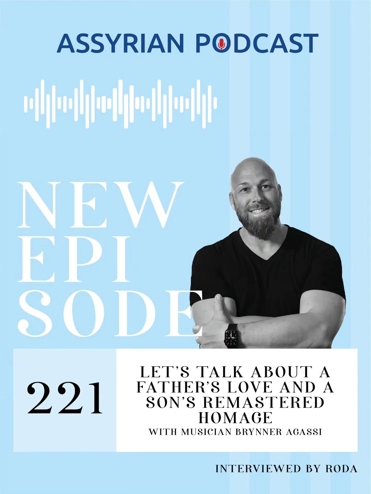
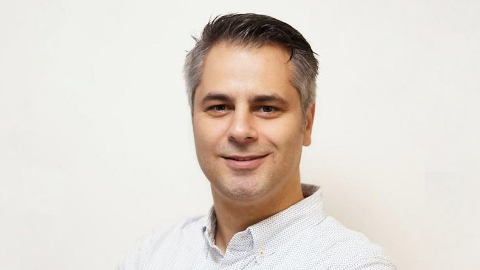
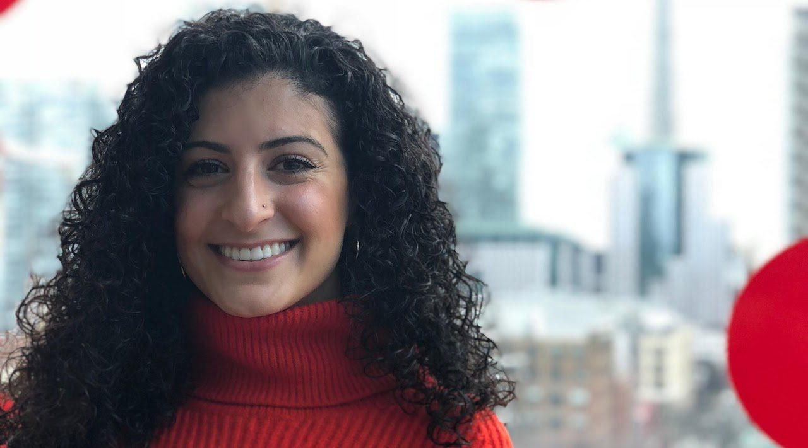
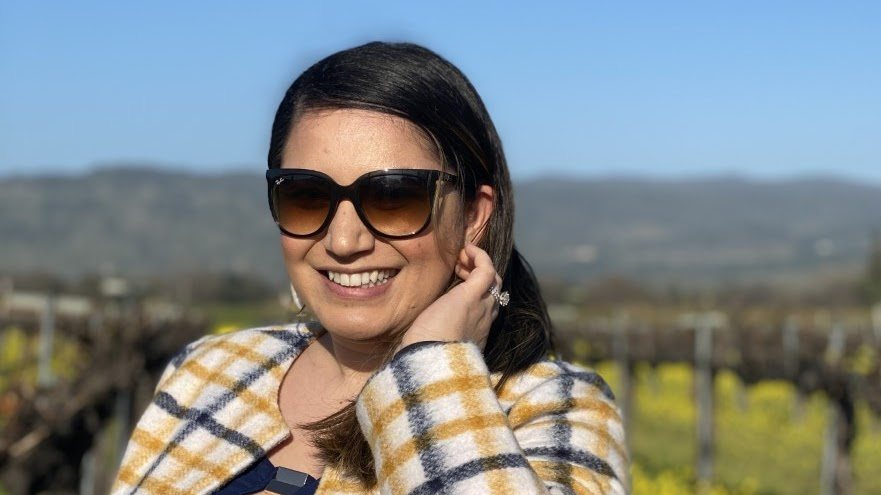
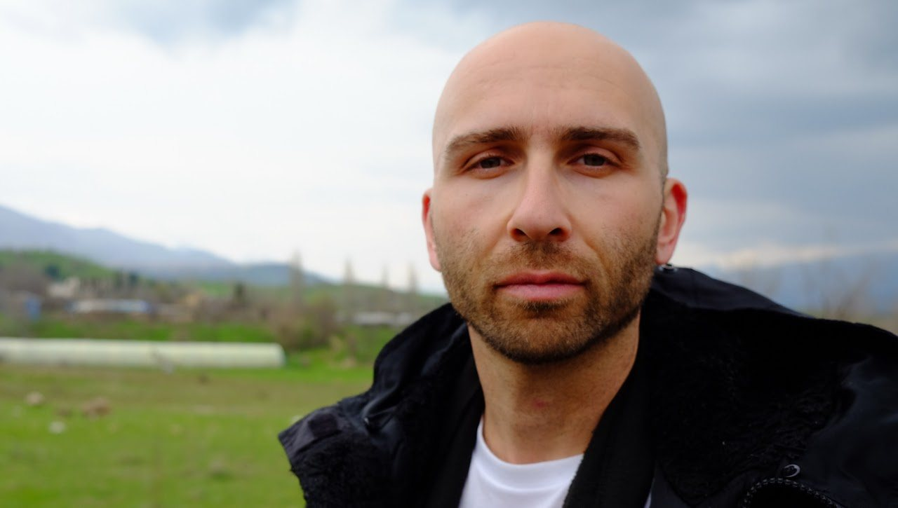
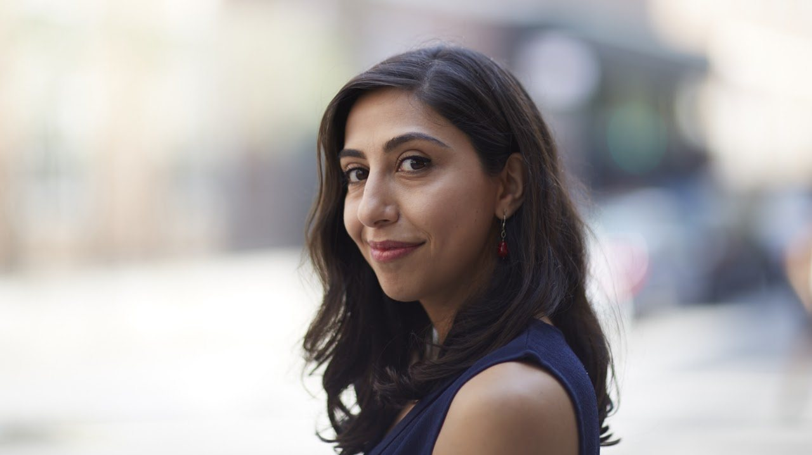
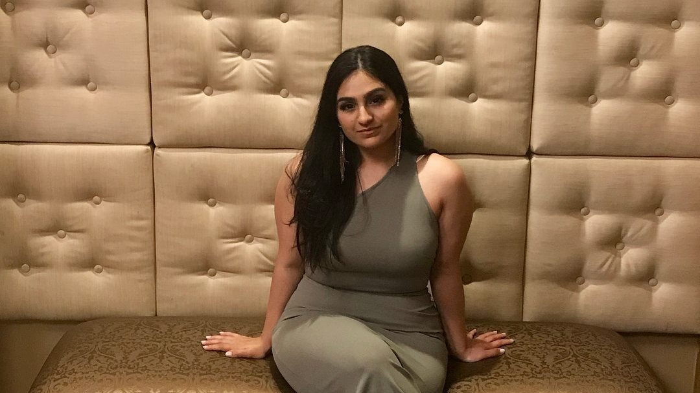
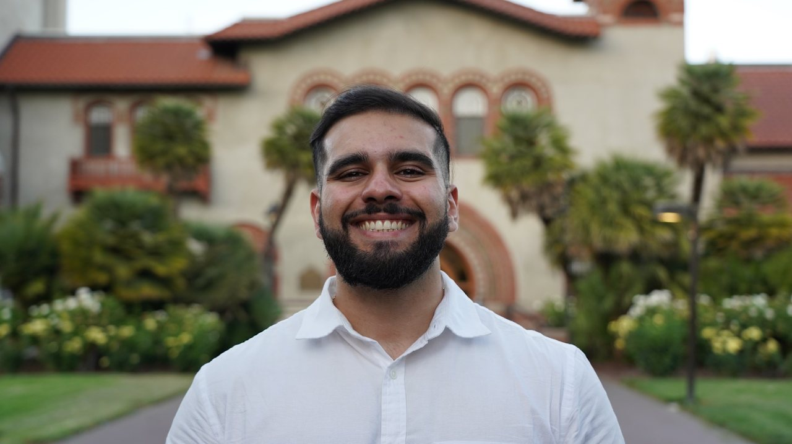
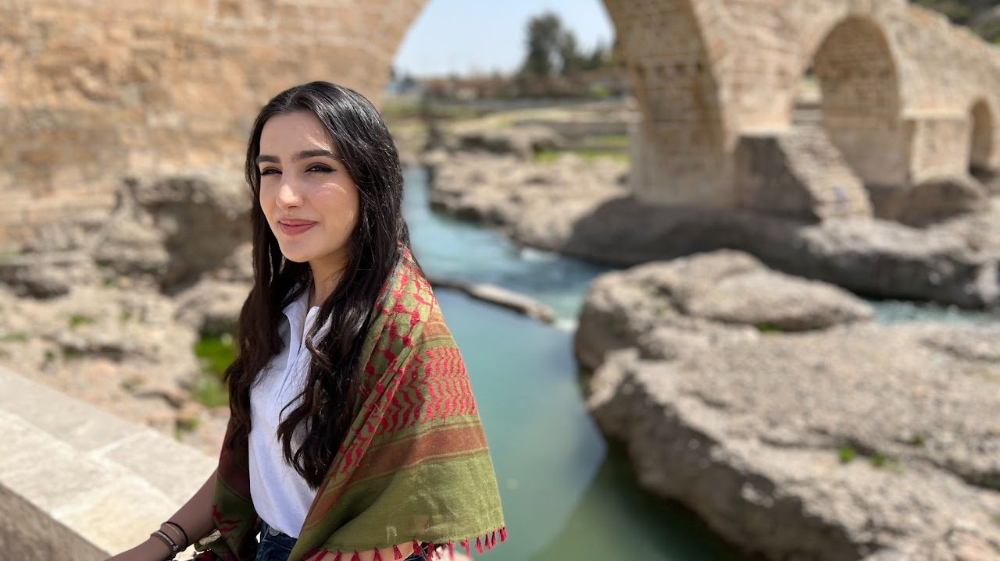

Stories carried across generations
Our voices.
Our story.
Unfiltered conversations with the artists, athletes, scholars, and builders shaping Assyrian life around the world.
Culture in motionܐ223 conversationsܐVoices across the diasporaܐStories for the next generationܐ
The listening room
01 / Episodes
Find a conversation
that stays with you.
Search by guest, filter a year, or follow a theme. Every episode opens into show notes and guest context without taking you away from the player.
Looking for something older? The complete archive reaches back to 2018.
No match yet
Try a broader word or another year.
Community & visuals
02 / Photo wall
The people behind
the sound.
Family archives, episode artwork, community milestones, and dispatches from across the diaspora. Select any frame for the full caption and carousel.
“A living archive is made one honest conversation at a time.”
Across cities, languages, generations, and traditions, the story keeps moving.
Est. 2018
About the show
Assyrians everywhere,
in their own words.
The Assyrian Podcast dives deep into the soul of Assyria through interviews with influential Assyrians from around the globe.
Each conversation holds space for the specificity that makes a culture real: the family stories, creative risks, public service, faith, humor, grief, ambition, language, and everyday choices that carry identity forward.
Suggest a guest- 2018
- The first episode
- 223
- Published conversations
- Global
- One community, many homes
The people asking the questions
03 / AP Team
Eight perspectives.
One listening room.
Based across North America and Europe, the current team brings its own lived experience to every conversation.

SteveCo-Founder & Co-Host · Bay Area, California
Steve started the podcast to inspire Assyrians and other ethnic minorities by helping people share their stories and the greatness they carry.

AdessaCo-Founder & Co-Host · Canada
Adessa believes sharing stories can bring a diasporic people closer. Music, dance, travel, and Assyrian culture remain central to her life.

RodaCo-Host · Michigan, USA
Roda’s love of people and their stories grew from a childhood surrounded by books. She brings curiosity, warmth, and an adventurous eye to the team.

PeterCo-Host · California
With a background in local government, grantmaking, and urban planning, Peter works to preserve Assyrian language, culture, and identity.

MarinaCo-Host · Spain & Finland
Marina explores how identity shapes lived experience and hopes to uplift the many ways Assyrian culture appears across different paths and places.

SarhaCo-Host · Chicago
An anthropology graduate and longtime community volunteer, Sarha brings a love of ethnography, storytelling, writing, and local service.

MarkCo-Host · Central California & Bay Area
Mark combines a communications and radio background with a commitment to preserving Assyrian language, culture, and identity.

StephanieSocial Media Guru & Co-Host
Raised between Assyrian and Greek traditions in Melbourne, Stephanie brings cultural care, creative energy, and a passion for community service.
Take the stories with you